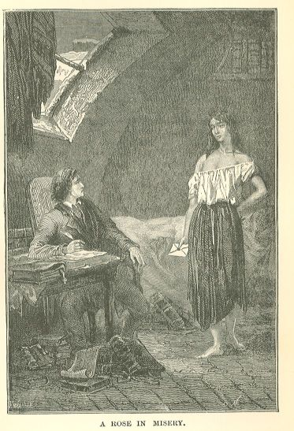

Les Misérables
My respectful sentiments, with which I have the honor to be
Madame,
Don Alvares, Spanish Captain
of Cavalry, a royalist who
has take refuge in France,
who finds himself on travells
for his country, and the
resources are lacking him to
continue his travells.
Madame,
Don Alvares, Spanish Captain
of Cavalry, a royalist who
has take refuge in France,
who finds himself on travells
for his country, and the
resources are lacking him to
continue his travells.
No address was joined to the signature. Marius hoped to find the address in the second
letter, whose superscription read: A Madame, Madame la Comtesse de Montvernet, Rue
Cassette, No. 9. This is what Marius read in it:—
Madame la Comtesse: It is an unhappy mother of a family of six
children the last of which is only eight months old. I sick
since my last confinement, abandoned by my husband five months ago,
haveing no resources in the world the most frightful indigance.
In the hope of Madame la Comtesse, she has the honor to be,
Madame, with profound respect,
Mistress Balizard.
children the last of which is only eight months old. I sick
since my last confinement, abandoned by my husband five months ago,
haveing no resources in the world the most frightful indigance.
In the hope of Madame la Comtesse, she has the honor to be,
Madame, with profound respect,
Mistress Balizard.
Marius turned to the third letter, which was a petition like the preceding; he read:—
Monsieur Pabourgeot, Elector, wholesale stocking merchant,
Rue Saint-Denis on the corner of the Rue aux Fers.
I permit myself to address you this letter to beg you to grant me
the pretious favor of your simpaties and to interest yourself in a man
of letters who has just sent a drama to the Theatre-Francais. The subject
is historical, and the action takes place in Auvergne in the time
of the Empire; the style, I think, is natural, laconic, and may have
some merit. There are couplets to be sung in four places. The comic,
the serious, the unexpected, are mingled in a variety of characters,
and a tinge of romanticism lightly spread through all the intrigue
which proceeds misteriously, and ends, after striking altarations,
in the midst of many beautiful strokes of brilliant scenes.
My principal object is to satisfi the desire which progressively
animates the man of our century, that is to say, the fashion,
that capritious and bizarre weathervane which changes at almost
every new wind.
In spite of these qualities I have reason to fear that jealousy,
the egotism of priviliged authors, may obtaine my exclusion from
the theatre, for I am not ignorant of the mortifications with which
new-comers are treated.
Monsiuer Pabourgeot, your just reputation as an enlightened protector
of men of litters emboldens me to send you my daughter who will
explain our indigant situation to you, lacking bread and fire
in this wynter season. When I say to you that I beg you to accept
the dedication of my drama which I desire to make to you and of all
those that I shall make, is to prove to you how great is my ambition
to have the honor of sheltering myself under your protection,
and of adorning my writings with your name. If you deign to honor
me with the most modest offering, I shall immediately occupy myself
in making a piesse of verse to pay you my tribute of gratitude.
Which I shall endeavor to render this piesse as perfect as possible,
will be sent to you before it is inserted at the beginning of the
drama and delivered on the stage.
To Monsieur
and Madame Pabourgeot,
My most respectful complements,
Genflot, man of letters.
P. S. Even if it is only forty sous.
Excuse me for sending my daughter and not presenting myself,
but sad motives connected with the toilet do not permit me,
alas! to go out.
Rue Saint-Denis on the corner of the Rue aux Fers.
I permit myself to address you this letter to beg you to grant me
the pretious favor of your simpaties and to interest yourself in a man
of letters who has just sent a drama to the Theatre-Francais. The subject
is historical, and the action takes place in Auvergne in the time
of the Empire; the style, I think, is natural, laconic, and may have
some merit. There are couplets to be sung in four places. The comic,
the serious, the unexpected, are mingled in a variety of characters,
and a tinge of romanticism lightly spread through all the intrigue
which proceeds misteriously, and ends, after striking altarations,
in the midst of many beautiful strokes of brilliant scenes.
My principal object is to satisfi the desire which progressively
animates the man of our century, that is to say, the fashion,
that capritious and bizarre weathervane which changes at almost
every new wind.
In spite of these qualities I have reason to fear that jealousy,
the egotism of priviliged authors, may obtaine my exclusion from
the theatre, for I am not ignorant of the mortifications with which
new-comers are treated.
Monsiuer Pabourgeot, your just reputation as an enlightened protector
of men of litters emboldens me to send you my daughter who will
explain our indigant situation to you, lacking bread and fire
in this wynter season. When I say to you that I beg you to accept
the dedication of my drama which I desire to make to you and of all
those that I shall make, is to prove to you how great is my ambition
to have the honor of sheltering myself under your protection,
and of adorning my writings with your name. If you deign to honor
me with the most modest offering, I shall immediately occupy myself
in making a piesse of verse to pay you my tribute of gratitude.
Which I shall endeavor to render this piesse as perfect as possible,
will be sent to you before it is inserted at the beginning of the
drama and delivered on the stage.
To Monsieur
and Madame Pabourgeot,
My most respectful complements,
Genflot, man of letters.
P. S. Even if it is only forty sous.
Excuse me for sending my daughter and not presenting myself,
but sad motives connected with the toilet do not permit me,
alas! to go out.
Finally, Marius opened the fourth letter. The address ran: To the benevolent Gentleman
of the church of Saint-Jacquesdu-haut-Pas. It contained the following lines:—
Benevolent Man: If you deign to accompany my daughter, you will
behold a misserable calamity, and I will show you my certificates.
At the aspect of these writings your generous soul will be moved
with a sentiment of obvious benevolence, for true philosophers
always feel lively emotions.
Admit, compassionate man, that it is necessary to suffer the most
cruel need, and that it is very painful, for the sake of obtaining
a little relief, to get oneself attested by the authorities as though
one were not free to suffer and to die of inanition while waiting
to have our misery relieved. Destinies are very fatal for several
and too prodigal or too protecting for others.
I await your presence or your offering, if you deign to make one,
and I beseech you to accept the respectful sentiments with which I
have the honor to be,
truly magnanimous man,
your very humble
and very obedient servant,
P. Fabantou, dramatic artist.
behold a misserable calamity, and I will show you my certificates.
At the aspect of these writings your generous soul will be moved
with a sentiment of obvious benevolence, for true philosophers
always feel lively emotions.
Admit, compassionate man, that it is necessary to suffer the most
cruel need, and that it is very painful, for the sake of obtaining
a little relief, to get oneself attested by the authorities as though
one were not free to suffer and to die of inanition while waiting
to have our misery relieved. Destinies are very fatal for several
and too prodigal or too protecting for others.
I await your presence or your offering, if you deign to make one,
and I beseech you to accept the respectful sentiments with which I
have the honor to be,
truly magnanimous man,
your very humble
and very obedient servant,
P. Fabantou, dramatic artist.
After perusing these four letters, Marius did not find himself much further advanced
than before.
In the first place, not one of the signers gave his address.
Then, they seemed to come from four different individuals, Don Alveras, Mistress Balizard,
the poet Genflot, and dramatic artist Fabantou; but the singular thing about these
letters was, that all four were written by the same hand.
What conclusion was to be drawn from this, except that they all come from the same
person?
Moreover, and this rendered the conjecture all the more probable, the coarse and yellow
paper was the same in all four, the odor of tobacco was the same, and, although an
attempt had been made to vary the style, the same orthographical faults were reproduced
with the greatest tranquillity, and the man of letters Genflot was no more exempt
from them than the Spanish captain.
It was waste of trouble to try to solve this petty mystery. Had it not been a chance
find, it would have borne the air of a mystification. Marius was too melancholy to
take even a chance pleasantry well, and to lend himself to a game which the pavement
of the street seemed desirous of playing with him. It seemed to him that he was playing
the part of the blind man in blind man's buff between the four letters, and that they
were making sport of him.
Nothing, however, indicated that these letters belonged to the two young girls whom
Marius had met on the boulevard. After all, they were evidently papers of no value.
Marius replaced them in their envelope, flung the whole into a corner and went to
bed. About seven o'clock in the morning, he had just risen and breakfasted, and was
trying to settle down to work, when there came a soft knock at his door.
As he owned nothing, he never locked his door, unless occasionally, though very rarely,
when he was engaged in some pressing work. Even when absent he left his key in the
lock. "You will be robbed," said Ma'am Bougon. "Of what?" said Marius. The truth is,
however, that he had, one day, been robbed of an old pair of boots, to the great triumph
of Ma'am Bougon.
There came a second knock, as gentle as the first.
"Come in," said Marius.
The door opened.
"What do you want, Ma'am Bougon?" asked Marius, without raising his eyes from the
books and manuscripts on his table.
A voice which did not belong to Ma'am Bougon replied:—
"Excuse me, sir—"
It was a dull, broken, hoarse, strangled voice, the voice of an old man, roughened
with brandy and liquor.
Marius turned round hastily, and beheld a young girl.
CHAPTER IV—A ROSE IN MISERY

A very young girl was standing in the half-open door. The dormer window of the garret,
through which the light fell, was precisely opposite the door, and illuminated the
figure with a wan light. She was a frail, emaciated, slender creature; there was nothing
but a chemise and a petticoat upon that chilled and shivering nakedness. Her girdle
was a string, her head ribbon a string, her pointed shoulders emerged from her chemise,
a blond and lymphatic pallor, earth-colored collar-bones, red hands, a half-open and
degraded mouth, missing teeth, dull, bold, base eyes; she had the form of a young
girl who has missed her youth, and the look of a corrupt old woman; fifty years mingled
with fifteen; one of those beings which are both feeble and horrible, and which cause
those to shudder whom they do not cause to weep.
Marius had risen, and was staring in a sort of stupor at this being, who was almost
like the forms of the shadows which traverse dreams.
The most heart-breaking thing of all was, that this young girl had not come into the
world to be homely. In her early childhood she must even have been pretty. The grace
of her age was still struggling against the hideous, premature decrepitude of debauchery
and poverty. The remains of beauty were dying away in that face of sixteen, like the
pale sunlight which is extinguished under hideous clouds at dawn on a winter's day.
That face was not wholly unknown to Marius. He thought he remembered having seen it
somewhere.
"What do you wish, Mademoiselle?" he asked.
The young girl replied in her voice of a drunken convict:—
"Here is a letter for you, Monsieur Marius."
She called Marius by his name; he could not doubt that he was the person whom she
wanted; but who was this girl? How did she know his name?
Without waiting for him to tell her to advance, she entered. She entered resolutely,
staring, with a sort of assurance that made the heart bleed, at the whole room and
the unmade bed. Her feet were bare. Large holes in her petticoat permitted glimpses
of her long legs and her thin knees. She was shivering.
She held a letter in her hand, which she presented to Marius.
Marius, as he opened the letter, noticed that the enormous wafer which sealed it was
still moist. The message could not have come from a distance. He read:—
My amiable neighbor, young man: I have learned of your goodness to me,
that you paid my rent six months ago. I bless you, young man.
My eldest daughter will tell you that we have been without a morsel
of bread for two days, four persons and my spouse ill. If I am
not deseaved in my opinion, I think I may hope that your generous
heart will melt at this statement and the desire will subjugate you
to be propitious to me by daigning to lavish on me a slight favor.
I am with the distinguished consideration which is due to the
benefactors of humanity,—
Jondrette.
P.S. My eldest daughter will await your orders, dear Monsieur Marius.
that you paid my rent six months ago. I bless you, young man.
My eldest daughter will tell you that we have been without a morsel
of bread for two days, four persons and my spouse ill. If I am
not deseaved in my opinion, I think I may hope that your generous
heart will melt at this statement and the desire will subjugate you
to be propitious to me by daigning to lavish on me a slight favor.
I am with the distinguished consideration which is due to the
benefactors of humanity,—
Jondrette.
P.S. My eldest daughter will await your orders, dear Monsieur Marius.
This letter, coming in the very midst of the mysterious adventure which had occupied
Marius' thoughts ever since the preceding evening, was like a candle in a cellar.
All was suddenly illuminated.
This letter came from the same place as the other four. There was the same writing,
the same style, the same orthography, the same paper, the same odor of tobacco.
There were five missives, five histories, five signatures, and a single signer. The
Spanish Captain Don Alvares, the unhappy Mistress Balizard, the dramatic poet Genflot,
the old comedian Fabantou, were all four named Jondrette, if, indeed, Jondrette himself
were named Jondrette.
Marius had lived in the house for a tolerably long time, and he had had, as we have
said, but very rare occasion to see, to even catch a glimpse of, his extremely mean
neighbors. His mind was elsewhere, and where the mind is, there the eyes are also.
He had been obliged more than once to pass the Jondrettes in the corridor or on the
stairs; but they were mere forms to him; he had paid so little heed to them, that,
on the preceding evening, he had jostled the Jondrette girls on the boulevard, without
recognizing them, for it had evidently been they, and it was with great difficulty
that the one who had just entered his room had awakened in him, in spite of disgust
and pity, a vague recollection of having met her elsewhere.
Now he saw everything clearly. He understood that his neighbor Jondrette, in his distress,
exercised the industry of speculating on the charity of benevolent persons, that he
procured addresses, and that he wrote under feigned names to people whom he judged
to be wealthy and compassionate, letters which his daughters delivered at their risk
and peril, for this father had come to such a pass, that he risked his daughters;
he was playing a game with fate, and he used them as the stake. Marius understood
that probably, judging from their flight on the evening before, from their breathless
condition, from their terror and from the words of slang which he had overheard, these
unfortunate creatures were plying some inexplicably sad profession, and that the result
of the whole was, in the midst of human society, as it is now constituted, two miserable
beings who were neither girls nor women, a species of impure and innocent monsters
produced by misery.
Sad creatures, without name, or sex, or age, to whom neither good nor evil were any
longer possible, and who, on emerging from childhood, have already nothing in this
world, neither liberty, nor virtue, nor responsibility. Souls which blossomed out
yesterday, and are faded to-day, like those flowers let fall in the streets, which
are soiled with every sort of mire, while waiting for some wheel to crush them. Nevertheless,
while Marius bent a pained and astonished gaze on her, the young girl was wandering
back and forth in the garret with the audacity of a spectre. She kicked about, without
troubling herself as to her nakedness. Occasionally her chemise, which was untied
and torn, fell almost to her waist. She moved the chairs about, she disarranged the
toilet articles which stood on the commode, she handled Marius' clothes, she rummaged
about to see what there was in the corners.
"Hullo!" said she, "you have a mirror!"
And she hummed scraps of vaudevilles, as though she had been alone, frolicsome refrains
which her hoarse and guttural voice rendered lugubrious.
An indescribable constraint, weariness, and humiliation were perceptible beneath this
hardihood. Effrontery is a disgrace.
Nothing could be more melancholy than to see her sport about the room, and, so to
speak, flit with the movements of a bird which is frightened by the daylight, or which
has broken its wing. One felt that under other conditions of education and destiny,
the gay and over-free mien of this young girl might have turned out sweet and charming.
Never, even among animals, does the creature born to be a dove change into an osprey.
That is only to be seen among men.
Marius reflected, and allowed her to have her way.
She approached the table.
"Ah!" said she, "books!"
A flash pierced her glassy eye. She resumed, and her accent expressed the happiness
which she felt in boasting of something, to which no human creature is insensible:—
"I know how to read, I do!"
She eagerly seized a book which lay open on the table, and read with tolerable fluency:—
"—General Bauduin received orders to take the chateau of Hougomont which stands in
the middle of the plain of Waterloo, with five battalions of his brigade."
She paused.
"Ah! Waterloo! I know about that. It was a battle long ago. My father was there. My
father has served in the armies. We are fine Bonapartists in our house, that we are!
Waterloo was against the English."
She laid down the book, caught up a pen, and exclaimed:—
"And I know how to write, too!"
She dipped her pen in the ink, and turning to Marius:—
"Do you want to see? Look here, I'm going to write a word to show you."
And before he had time to answer, she wrote on a sheet of white paper, which lay in
the middle of the table: "The bobbies are here."
Then throwing down the pen:—
"There are no faults of orthography. You can look. We have received an education,
my sister and I. We have not always been as we are now. We were not made—"
Here she paused, fixed her dull eyes on Marius, and burst out laughing, saying, with
an intonation which contained every form of anguish, stifled by every form of cynicism:—
"Bah!"
And she began to hum these words to a gay air:—
"J'ai faim, mon père." I am hungry, father.
Pas de fricot. I have no food.
J'ai froid, ma mère. I am cold, mother.
Pas de tricot. I have no clothes.
Grelotte, Lolotte!
Lolotte! Shiver,
Sanglote, Sob,
Jacquot!" Jacquot!"
Pas de fricot. I have no food.
J'ai froid, ma mère. I am cold, mother.
Pas de tricot. I have no clothes.
Grelotte, Lolotte!
Lolotte! Shiver,
Sanglote, Sob,
Jacquot!" Jacquot!"
She had hardly finished this couplet, when she exclaimed:—
"Do you ever go to the play, Monsieur Marius? I do. I have a little brother who is
a friend of the artists, and who gives me tickets sometimes. But I don't like the
benches in the galleries. One is cramped and uncomfortable there. There are rough
people there sometimes; and people who smell bad."
Then she scrutinized Marius, assumed a singular air and said:—
"Do you know, Mr. Marius, that you are a very handsome fellow?"
And at the same moment the same idea occurred to them both, and made her smile and
him blush. She stepped up to him, and laid her hand on his shoulder: "You pay no heed
to me, but I know you, Mr. Marius. I meet you here on the staircase, and then I often
see you going to a person named Father Mabeuf who lives in the direction of Austerlitz,
sometimes when I have been strolling in that quarter. It is very becoming to you to
have your hair tumbled thus."
She tried to render her voice soft, but only succeeded in making it very deep. A portion
of her words was lost in the transit from her larynx to her lips, as though on a piano
where some notes are missing.
Marius had retreated gently.
"Mademoiselle," said he, with his cool gravity, "I have here a package which belongs
to you, I think. Permit me to return it to you."
And he held out the envelope containing the four letters.
She clapped her hands and exclaimed:—
"We have been looking everywhere for that!"
Then she eagerly seized the package and opened the envelope, saying as she did so:—
"Dieu de Dieu! how my sister and I have hunted! And it was you who found it! On the
boulevard, was it not? It must have been on the boulevard? You see, we let it fall
when we were running. It was that brat of a sister of mine who was so stupid. When
we got home, we could not find it anywhere. As we did not wish to be beaten, as that
is useless, as that is entirely useless, as that is absolutely useless, we said that
we had carried the letters to the proper persons, and that they had said to us: 'Nix.'
So here they are, those poor letters! And how did you find out that they belonged
to me? Ah! yes, the writing. So it was you that we jostled as we passed last night.
We couldn't see. I said to my sister: 'Is it a gentleman?' My sister said to me: 'I
think it is a gentleman.'"
In the meanwhile she had unfolded the petition addressed to "the benevolent gentleman
of the church of Saint-Jacquesdu-Haut-Pas."
"Here!" said she, "this is for that old fellow who goes to mass. By the way, this
is his hour. I'll go and carry it to him. Perhaps he will give us something to breakfast
on."
Then she began to laugh again, and added:—
"Do you know what it will mean if we get a breakfast today? It will mean that we shall
have had our breakfast of the day before yesterday, our breakfast of yesterday, our
dinner of to-day, and all that at once, and this morning. Come! Parbleu! if you are
not satisfied, dogs, burst!"
This reminded Marius of the wretched girl's errand to himself. He fumbled in his waistcoat
pocket, and found nothing there.
The young girl went on, and seemed to have no consciousness of Marius' presence.
"I often go off in the evening. Sometimes I don't come home again. Last winter, before
we came here, we lived under the arches of the bridges. We huddled together to keep
from freezing. My little sister cried. How melancholy the water is! When I thought
of drowning myself, I said to myself: 'No, it's too cold.' I go out alone, whenever
I choose, I sometimes sleep in the ditches. Do you know, at night, when I walk along
the boulevard, I see the trees like forks, I see houses, all black and as big as Notre
Dame, I fancy that the white walls are the river, I say to myself: 'Why, there's water
there!' The stars are like the lamps in illuminations, one would say that they smoked
and that the wind blew them out, I am bewildered, as though horses were breathing
in my ears; although it is night, I hear hand-organs and spinning-machines, and I
don't know what all. I think people are flinging stones at me, I flee without knowing
whither, everything whirls and whirls. You feel very queer when you have had no food."
And then she stared at him with a bewildered air.
By dint of searching and ransacking his pockets, Marius had finally collected five
francs sixteen sous. This was all he owned in the world for the moment. "At all events,"
he thought, "there is my dinner for to-day, and to-morrow we will see." He kept the
sixteen sous, and handed the five francs to the young girl.
She seized the coin.
"Good!" said she, "the sun is shining!"
And, as though the sun had possessed the property of melting the avalanches of slang
in her brain, she went on:—
"Five francs! the shiner! a monarch! in this hole! Ain't this fine! You're a jolly
thief! I'm your humble servant! Bravo for the good fellows! Two days' wine! and meat!
and stew! we'll have a royal feast! and a good fill!"
She pulled her chemise up on her shoulders, made a low bow to Marius, then a familiar
sign with her hand, and went towards the door, saying:—
"Good morning, sir. It's all right. I'll go and find my old man."
As she passed, she caught sight of a dry crust of bread on the commode, which was
moulding there amid the dust; she flung herself upon it and bit into it, muttering:—
"That's good! it's hard! it breaks my teeth!"
Then she departed.
CHAPTER V—A PROVIDENTIAL PEEP-HOLE
Marius had lived for five years in poverty, in destitution, even in distress, but
he now perceived that he had not known real misery. True misery he had but just had
a view of. It was its spectre which had just passed before his eyes. In fact, he who
has only beheld the misery of man has seen nothing; the misery of woman is what he
must see; he who has seen only the misery of woman has seen nothing; he must see the
misery of the child.
When a man has reached his last extremity, he has reached his last resources at the
same time. Woe to the defenceless beings who surround him! Work, wages, bread, fire,
courage, good will, all fail him simultaneously. The light of day seems extinguished
without, the moral light within; in these shadows man encounters the feebleness of
the woman and the child, and bends them violently to ignominy.
Then all horrors become possible. Despair is surrounded with fragile partitions which
all open on either vice or crime.
Health, youth, honor, all the shy delicacies of the young body, the heart, virginity,
modesty, that epidermis of the soul, are manipulated in sinister wise by that fumbling
which seeks resources, which encounters opprobrium, and which accommodates itself
to it. Fathers, mothers, children, brothers, sisters, men, women, daughters, adhere
and become incorporated, almost like a mineral formation, in that dusky promiscuousness
of sexes, relationships, ages, infamies, and innocences. They crouch, back to back,
in a sort of hut of fate. They exchange woe-begone glances. Oh, the unfortunate wretches!
How pale they are! How cold they are! It seems as though they dwelt in a planet much
further from the sun than ours.
This young girl was to Marius a sort of messenger from the realm of sad shadows. She
revealed to him a hideous side of the night.
Marius almost reproached himself for the preoccupations of revery and passion which
had prevented his bestowing a glance on his neighbors up to that day. The payment
of their rent had been a mechanical movement, which any one would have yielded to;
but he, Marius, should have done better than that. What! only a wall separated him
from those abandoned beings who lived gropingly in the dark outside the pale of the
rest of the world, he was elbow to elbow with them, he was, in some sort, the last
link of the human race which they touched, he heard them live, or rather, rattle in
the death agony beside him, and he paid no heed to them! Every day, every instant,
he heard them walking on the other side of the wall, he heard them go, and come, and
speak, and he did not even lend an ear! And groans lay in those words, and he did
not even listen to them, his thoughts were elsewhere, given up to dreams, to impossible
radiances, to loves in the air, to follies; and all the while, human creatures, his
brothers in Jesus Christ, his brothers in the people, were agonizing in vain beside
him! He even formed a part of their misfortune, and he aggravated it. For if they
had had another neighbor who was less chimerical and more attentive, any ordinary
and charitable man, evidently their indigence would have been noticed, their signals
of distress would have been perceived, and they would have been taken hold of and
rescued! They appeared very corrupt and very depraved, no doubt, very vile, very odious
even; but those who fall without becoming degraded are rare; besides, there is a point
where the unfortunate and the infamous unite and are confounded in a single word,
a fatal word, the miserable; whose fault is this? And then should not the charity
be all the more profound, in proportion as the fall is great?
While reading himself this moral lesson, for there were occasions on which Marius,
like all truly honest hearts, was his own pedagogue and scolded himself more than
he deserved, he stared at the wall which separated him from the Jondrettes, as though
he were able to make his gaze, full of pity, penetrate that partition and warm these
wretched people. The wall was a thin layer of plaster upheld by lathes and beams,
and, as the reader had just learned, it allowed the sound of voices and words to be
clearly distinguished. Only a man as dreamy as Marius could have failed to perceive
this long before. There was no paper pasted on the wall, either on the side of the
Jondrettes or on that of Marius; the coarse construction was visible in its nakedness.
Marius examined the partition, almost unconsciously; sometimes revery examines, observes,
and scrutinizes as thought would. All at once he sprang up; he had just perceived,
near the top, close to the ceiling, a triangular hole, which resulted from the space
between three lathes. The plaster which should have filled this cavity was missing,
and by mounting on the commode, a view could be had through this aperture into the
Jondrettes' attic. Commiseration has, and should have, its curiosity. This aperture
formed a sort of peep-hole. It is permissible to gaze at misfortune like a traitor
in order to succor it.27
"Let us get some little idea of what these people are like," thought Marius, "and
in what condition they are."
He climbed upon the commode, put his eye to the crevice, and looked.
CHAPTER VI—THE WILD MAN IN HIS LAIR
Cities, like forests, have their caverns in which all the most wicked and formidable
creatures which they contain conceal themselves. Only, in cities, that which thus
conceals itself is ferocious, unclean, and petty, that is to say, ugly; in forests,
that which conceals itself is ferocious, savage, and grand, that is to say, beautiful.
Taking one lair with another, the beast's is preferable to the man's. Caverns are
better than hovels.
What Marius now beheld was a hovel.
Marius was poor, and his chamber was poverty-stricken, but as his poverty was noble,
his garret was neat. The den upon which his eye now rested was abject, dirty, fetid,
pestiferous, mean, sordid. The only furniture consisted of a straw chair, an infirm
table, some old bits of crockery, and in two of the corners, two indescribable pallets;
all the light was furnished by a dormer window of four panes, draped with spiders'
webs. Through this aperture there penetrated just enough light to make the face of
a man appear like the face of a phantom. The walls had a leprous aspect, and were
covered with seams and scars, like a visage disfigured by some horrible malady; a
repulsive moisture exuded from them. Obscene sketches roughly sketched with charcoal
could be distinguished upon them.
The chamber which Marius occupied had a dilapidated brick pavement; this one was neither
tiled nor planked; its inhabitants stepped directly on the antique plaster of the
hovel, which had grown black under the long-continued pressure of feet. Upon this
uneven floor, where the dirt seemed to be fairly incrusted, and which possessed but
one virginity, that of the broom, were capriciously grouped constellations of old
shoes, socks, and repulsive rags; however, this room had a fireplace, so it was let
for forty francs a year. There was every sort of thing in that fireplace, a brazier,
a pot, broken boards, rags suspended from nails, a bird-cage, ashes, and even a little
fire. Two brands were smouldering there in a melancholy way.
One thing which added still more to the horrors of this garret was, that it was large.
It had projections and angles and black holes, the lower sides of roofs, bays, and
promontories. Hence horrible, unfathomable nooks where it seemed as though spiders
as big as one's fist, wood-lice as large as one's foot, and perhaps even—who knows?—some
monstrous human beings, must be hiding.
One of the pallets was near the door, the other near the window. One end of each touched
the fireplace and faced Marius. In a corner near the aperture through which Marius
was gazing, a colored engraving in a black frame was suspended to a nail on the wall,
and at its bottom, in large letters, was the inscription: THE DREAM. This represented
a sleeping woman, and a child, also asleep, the child on the woman's lap, an eagle
in a cloud, with a crown in his beak, and the woman thrusting the crown away from
the child's head, without awaking the latter; in the background, Napoleon in a glory,
leaning on a very blue column with a yellow capital ornamented with this inscription:
MARINGO
AUSTERLITS
IENA
WAGRAMME
ELOT
AUSTERLITS
IENA
WAGRAMME
ELOT
Beneath this frame, a sort of wooden panel, which was no longer than it was broad,
stood on the ground and rested in a sloping attitude against the wall. It had the
appearance of a picture with its face turned to the wall, of a frame probably showing
a daub on the other side, of some pier-glass detached from a wall and lying forgotten
there while waiting to be rehung.
Near the table, upon which Marius descried a pen, ink, and paper, sat a man about
sixty years of age, small, thin, livid, haggard, with a cunning, cruel, and uneasy
air; a hideous scoundrel.
If Lavater had studied this visage, he would have found the vulture mingled with the
attorney there, the bird of prey and the pettifogger rendering each other mutually
hideous and complementing each other; the pettifogger making the bird of prey ignoble,
the bird of prey making the pettifogger horrible.
This man had a long gray beard. He was clad in a woman's chemise, which allowed his
hairy breast and his bare arms, bristling with gray hair, to be seen. Beneath this
chemise, muddy trousers and boots through which his toes projected were visible.
He had a pipe in his mouth and was smoking. There was no bread in the hovel, but there
was still tobacco.
He was writing probably some more letters like those which Marius had read.
On the corner of the table lay an ancient, dilapidated, reddish volume, and the size,
which was the antique 12mo of reading-rooms, betrayed a romance. On the cover sprawled
the following title, printed in large capitals: GOD; THE KING; HONOR AND THE LADIES;
BY DUCRAY DUMINIL, 1814.
As the man wrote, he talked aloud, and Marius heard his words:—
"The idea that there is no equality, even when you are dead! Just look at Pere Lachaise!
The great, those who are rich, are up above, in the acacia alley, which is paved.
They can reach it in a carriage. The little people, the poor, the unhappy, well, what
of them? they are put down below, where the mud is up to your knees, in the damp places.
They are put there so that they will decay the sooner! You cannot go to see them without
sinking into the earth."
He paused, smote the table with his fist, and added, as he ground his teeth:—
"Oh! I could eat the whole world!"
A big woman, who might be forty years of age, or a hundred, was crouching near the
fireplace on her bare heels.
She, too, was clad only in a chemise and a knitted petticoat patched with bits of
old cloth. A coarse linen apron concealed the half of her petticoat. Although this
woman was doubled up and bent together, it could be seen that she was of very lofty
stature. She was a sort of giant, beside her husband. She had hideous hair, of a reddish
blond which was turning gray, and which she thrust back from time to time, with her
enormous shining hands, with their flat nails.
Beside her, on the floor, wide open, lay a book of the same form as the other, and
probably a volume of the same romance.
On one of the pallets, Marius caught a glimpse of a sort of tall pale young girl,
who sat there half naked and with pendant feet, and who did not seem to be listening
or seeing or living.
No doubt the younger sister of the one who had come to his room.
She seemed to be eleven or twelve years of age. On closer scrutiny it was evident
that she really was fourteen. She was the child who had said, on the boulevard the
evening before: "I bolted, bolted, bolted!"
She was of that puny sort which remains backward for a long time, then suddenly starts
up rapidly. It is indigence which produces these melancholy human plants. These creatures
have neither childhood nor youth. At fifteen years of age they appear to be twelve,
at sixteen they seem twenty. To-day a little girl, to-morrow a woman. One might say
that they stride through life, in order to get through with it the more speedily.
At this moment, this being had the air of a child.
Moreover, no trace of work was revealed in that dwelling; no handicraft, no spinning-wheel,
not a tool. In one corner lay some ironmongery of dubious aspect. It was the dull
listlessness which follows despair and precedes the death agony.
Marius gazed for a while at this gloomy interior, more terrifying than the interior
of a tomb, for the human soul could be felt fluttering there, and life was palpitating
there. The garret, the cellar, the lowly ditch where certain indigent wretches crawl
at the very bottom of the social edifice, is not exactly the sepulchre, but only its
antechamber; but, as the wealthy display their greatest magnificence at the entrance
of their palaces, it seems that death, which stands directly side by side with them,
places its greatest miseries in that vestibule.
The man held his peace, the woman spoke no word, the young girl did not even seem
to breathe. The scratching of the pen on the paper was audible.
The man grumbled, without pausing in his writing. "Canaille! canaille! everybody is
canaille!"
This variation to Solomon's exclamation elicited a sigh from the woman.
"Calm yourself, my little friend," she said. "Don't hurt yourself, my dear. You are
too good to write to all those people, husband."
Bodies press close to each other in misery, as in cold, but hearts draw apart. This
woman must have loved this man, to all appearance, judging from the amount of love
within her; but probably, in the daily and reciprocal reproaches of the horrible distress
which weighed on the whole group, this had become extinct. There no longer existed
in her anything more than the ashes of affection for her husband. Nevertheless, caressing
appellations had survived, as is often the case. She called him: My dear, my little
friend, my good man, etc., with her mouth while her heart was silent.
The man resumed his writing.
CHAPTER VII—STRATEGY AND TACTICS
Marius, with a load upon his breast, was on the point of descending from the species
of observatory which he had improvised, when a sound attracted his attention and caused
him to remain at his post.
The door of the attic had just burst open abruptly. The eldest girl made her appearance
on the threshold. On her feet, she had large, coarse, men's shoes, bespattered with
mud, which had splashed even to her red ankles, and she was wrapped in an old mantle
which hung in tatters. Marius had not seen it on her an hour previously, but she had
probably deposited it at his door, in order that she might inspire the more pity,
and had picked it up again on emerging. She entered, pushed the door to behind her,
paused to take breath, for she was completely breathless, then exclaimed with an expression
of triumph and joy:—
"He is coming!"
The father turned his eyes towards her, the woman turned her head, the little sister
did not stir.
"Who?" demanded her father.
"The gentleman!"
"The philanthropist?"
"Yes."
"From the church of Saint-Jacques?"
"Yes."
"That old fellow?"
"Yes."
"And he is coming?"
"He is following me."
"You are sure?"
"I am sure."
"There, truly, he is coming?"
"He is coming in a fiacre."
"In a fiacre. He is Rothschild."
The father rose.
"How are you sure? If he is coming in a fiacre, how is it that you arrive before him?
You gave him our address at least? Did you tell him that it was the last door at the
end of the corridor, on the right? If he only does not make a mistake! So you found
him at the church? Did he read my letter? What did he say to you?"
"Ta, ta, ta," said the girl, "how you do gallop on, my good man! See here: I entered
the church, he was in his usual place, I made him a reverence, and I handed him the
letter; he read it and said to me: 'Where do you live, my child?' I said: 'Monsieur,
I will show you.' He said to me: 'No, give me your address, my daughter has some purchases
to make, I will take a carriage and reach your house at the same time that you do.'
I gave him the address. When I mentioned the house, he seemed surprised and hesitated
for an instant, then he said: 'Never mind, I will come.' When the mass was finished,
I watched him leave the church with his daughter, and I saw them enter a carriage.
I certainly did tell him the last door in the corridor, on the right."
"And what makes you think that he will come?"
"I have just seen the fiacre turn into the Rue Petit-Banquier. That is what made me
run so."
"How do you know that it was the same fiacre?"
"Because I took notice of the number, so there!"
"What was the number?"
"440."
"Good, you are a clever girl."
The girl stared boldly at her father, and showing the shoes which she had on her feet:—
"A clever girl, possibly; but I tell you I won't put these shoes on again, and that
I won't, for the sake of my health, in the first place, and for the sake of cleanliness,
in the next. I don't know anything more irritating than shoes that squelch, and go
ghi, ghi, ghi, the whole time. I prefer to go barefoot."
"You are right," said her father, in a sweet tone which contrasted with the young
girl's rudeness, "but then, you will not be allowed to enter churches, for poor people
must have shoes to do that. One cannot go barefoot to the good God," he added bitterly.
Then, returning to the subject which absorbed him:—
"So you are sure that he will come?"
"He is following on my heels," said she.
The man started up. A sort of illumination appeared on his countenance.
"Wife!" he exclaimed, "you hear. Here is the philanthropist. Extinguish the fire."
The stupefied mother did not stir.
The father, with the agility of an acrobat, seized a broken-nosed jug which stood
on the chimney, and flung the water on the brands.
Then, addressing his eldest daughter:—
"Here you! Pull the straw off that chair!"
His daughter did not understand.
He seized the chair, and with one kick he rendered it seatless. His leg passed through
it.
As he withdrew his leg, he asked his daughter:—
"Is it cold?"
"Very cold. It is snowing."
The father turned towards the younger girl who sat on the bed near the window, and
shouted to her in a thundering voice:—
"Quick! get off that bed, you lazy thing! will you never do anything? Break a pane
of glass!"
The little girl jumped off the bed with a shiver.
"Break a pane!" he repeated.
The child stood still in bewilderment.
"Do you hear me?" repeated her father, "I tell you to break a pane!"
The child, with a sort of terrified obedience, rose on tiptoe, and struck a pane with
her fist. The glass broke and fell with a loud clatter.
"Good," said the father.
He was grave and abrupt. His glance swept rapidly over all the crannies of the garret.
One would have said that he was a general making the final preparation at the moment
when the battle is on the point of beginning.
The mother, who had not said a word so far, now rose and demanded in a dull, slow,
languid voice, whence her words seemed to emerge in a congealed state:—
"What do you mean to do, my dear?"
"Get into bed," replied the man.
His intonation admitted of no deliberation. The mother obeyed, and threw herself heavily
on one of the pallets.
In the meantime, a sob became audible in one corner.
"What's that?" cried the father.
The younger daughter exhibited her bleeding fist, without quitting the corner in which
she was cowering. She had wounded herself while breaking the window; she went off,
near her mother's pallet and wept silently.
It was now the mother's turn to start up and exclaim:—
"Just see there! What follies you commit! She has cut herself breaking that pane for
you!"
"So much the better!" said the man. "I foresaw that."
"What? So much the better?" retorted his wife.
"Peace!" replied the father, "I suppress the liberty of the press."
Then tearing the woman's chemise which he was wearing, he made a strip of cloth with
which he hastily swathed the little girl's bleeding wrist.
That done, his eye fell with a satisfied expression on his torn chemise.
"And the chemise too," said he, "this has a good appearance."
An icy breeze whistled through the window and entered the room. The outer mist penetrated
thither and diffused itself like a whitish sheet of wadding vaguely spread by invisible
fingers. Through the broken pane the snow could be seen falling. The snow promised
by the Candlemas sun of the preceding day had actually come.
The father cast a glance about him as though to make sure that he had forgotten nothing.
He seized an old shovel and spread ashes over the wet brands in such a manner as to
entirely conceal them.
Then drawing himself up and leaning against the chimney-piece:—
"Now," said he, "we can receive the philanthropist."